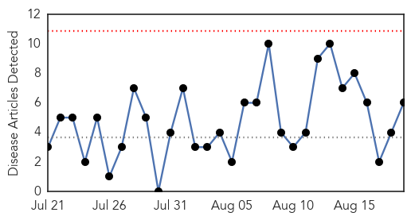
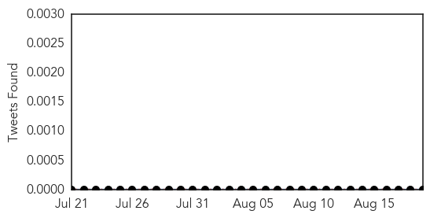

30 Day Trends
Web: 0 alerts, 0 warnings
Twitter: 0 alerts, 0 warnings
Top Articles:
- 0.971
- UC Berkeley student diagnosed with West Nile Virus
- 0.909
- Briefs: Chase leads to arrest of three Pittsburg runaways
- 0.851
- These Chickens Are Our First Line of Defense Against West Nile Virus
- 0.814
- Local health officials prepping after first case of Human West N
- 0.775
- Climate change may enable bugs, viruses to afflict Iowans
- 0.720
- First Nueces County West Nile case confirmed
Top Tweets:
-
No tweets found for Aug 19, 2014
Web/News Articles
Tweets
Article Locations

Article Confidences